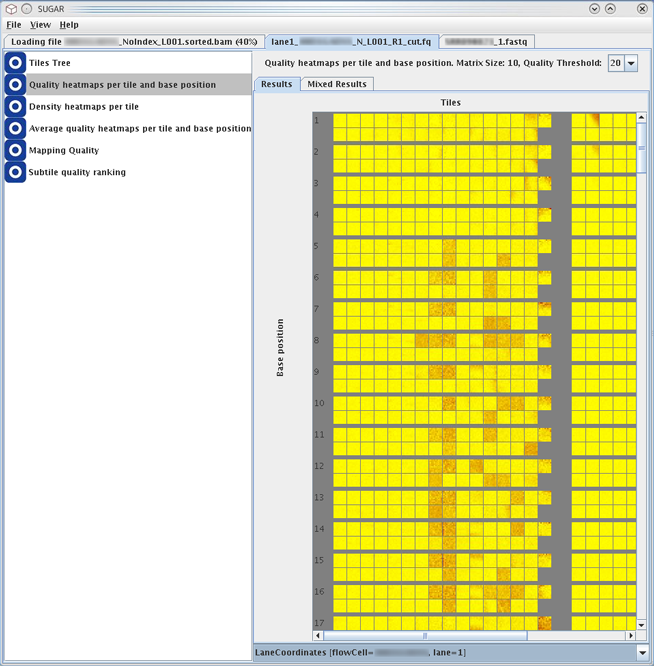
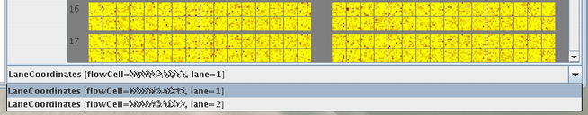
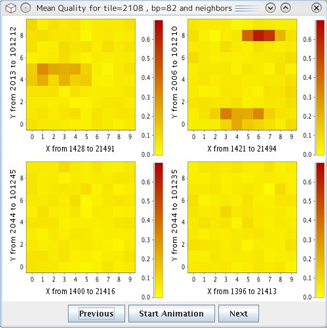
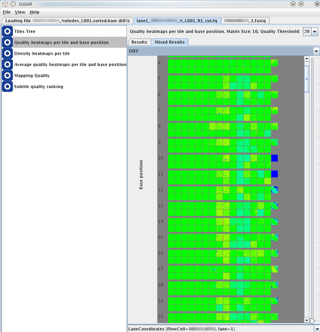

This module generates heatmap panels to show the overall sequence read quality across all tiles and base positions of the data loaded to the SUGAR. The coloring of the heatmap is based on the proportion of low-quality reads within each subtiles.


Mouse clicking on each tile on the heatmap opens popup view of the selected tile and its neighboring tiles (see below). This window allows more detailed evaluation of the selected tile and closer regions. The legend of the coloring is shown beside this detaied heatmaps.
Coloring of the heatmap indicates proportion of low-quality reads having QV less than the given theshold value (e.g., QV < 30 in these example pictures) for the given XY-regions or subtiles. The QV theshold is specified and able to be changed by the option menu "Heatmap Quality Threshold" in the file opening window (see the section "Loading Data").

The quality heatmap is colored by a linear paint scale with the following color boundaries in the Java implementation:
The buttons Previous/Next allow to jump to the heatmap for the previous/next base position.
The button Start Animation displays each heatmap of the selected nucleotide position for 1 second and then jumps to the next nucleotide position.
The Quality Threshold combo-box allows users to specify or change the value of the QV threshold when a series of the threshold values are specified in a file opening operation (see the section "Loading Data"). The higher the quality threshold value, the more reads are defined as low-quality, and the more red points appear in the heatmap.
In this screen, the heatmaps of the top and bottom lanes/tiles are combined using the selected mix operation. This view may help to find air bubbles or the other technical problems during the sequencers run.

The mix operation can be selected from the combo-box at the top of this tab. Three different indicators can be selected for the scheme of heatmap colorings:
The parameter 'weight' means the mixing balance between the values from the top and bottom lanes (ranging from 0 to 1) and can be specified and changed by using the slider on the right side of the screen. This parameter is used only by the weighted average mix operation.
The results of difference and absolute difference mix operations are colored using a 'temperature' paint scale of the Java implementation with the following color boundaries:
The mixed-results heatmaps can be generated for the input data having the following information:
As described the former section, the current version of the SUGAR (Oct. 2013) supports the following:
The SUGAR attempts to automatically determine which numeration scheme was used during file loading. If the numeration scheme can not be adequately recognized, the "Mixed Results tab" view results to be empty.